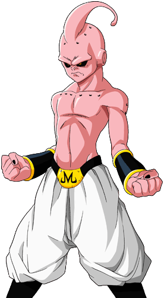

|  | Es el último gran enemigo al que se enfrentan los héroes en Dragon Ball Z, un demonio rosado con poderes mágicos para convertir a quien quiera en dulce y habilidades como regenerarse casi de forma infinita y absorber personas, tras lo cual cambia de forma y se vuelve más poderoso adquiriendo su energía y habilidades especiales. |
|---|---|